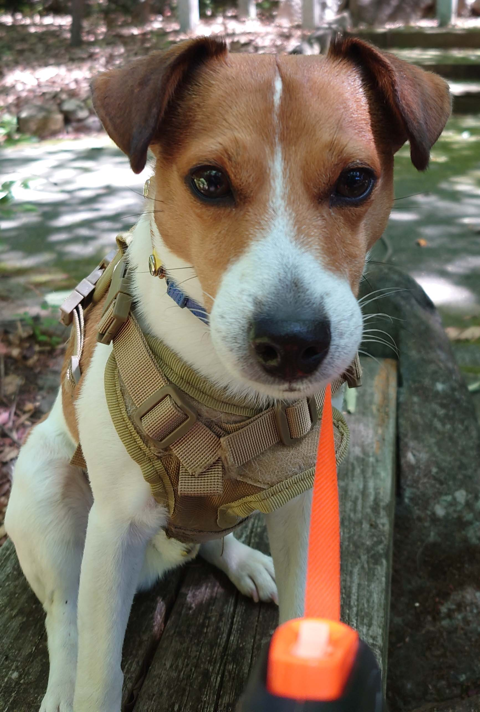
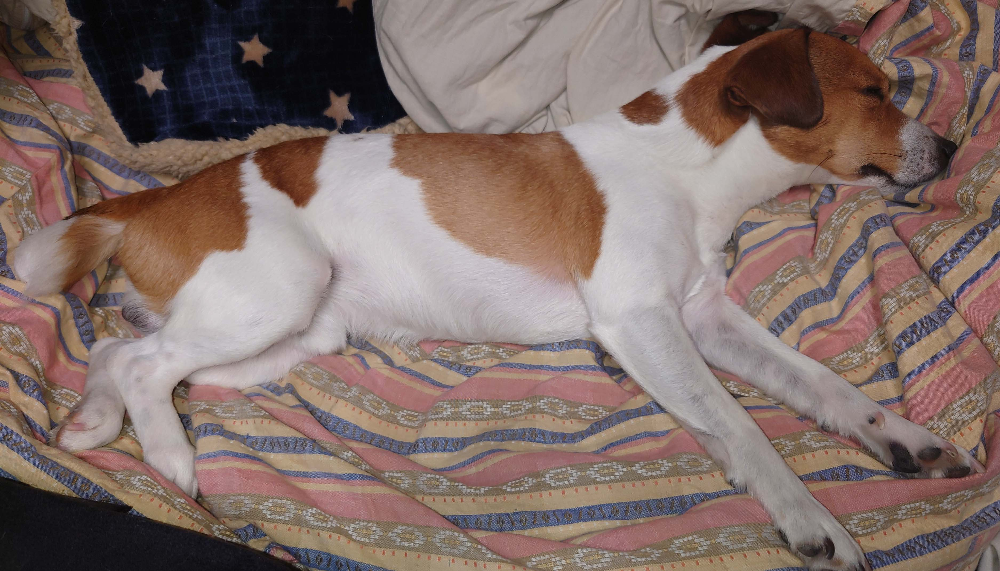
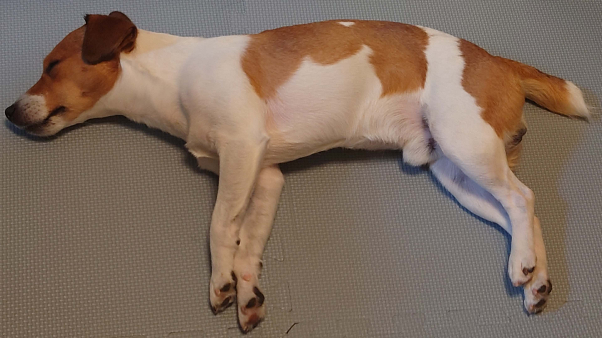

About This Dog
This dog is traveling from Japan to Germany. Thank you very much for helping and protecting this dog. The owner’s contact information is provided below.
Photos



Basic Information
- Breed: Jack Russell Terrier (short hair, thick coat)
- Age: 5 years
- Sex: Male (not neutered)
- Name: Eric
Personality & Characteristics
- Observes human movement carefully
- Tends to enter grassy areas on their own
- Sensitive to environmental changes
- Prioritizes humans over other dogs
- Currently trained for carrier stay (also walks in airports)
Health & Quarantine Information
- Microchip Number: 392141100104653
- Implant Date: 2021/04/05
- Rabies Vaccination Date 1: 2026/05/16
- Rabies Vaccination Date 2: 2025/05/31
- AQS Number (Rabies Antibody Test): _________
Contact Information
- Japan Phone Number:
- Germany Phone Number:
- Stay Location: Neufahrn in Niederbayern